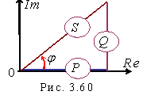

2.5.8.3. Треугольник мощностей
Прямоугольный треугольник с гипотенузой, равной S, и катетами Р и Q называют треугольник мощностей (рис. 2.60). Коэффициент мощности cosφ = P/S (φ = arctgQ/P) характеризует степень приближения активной мощности нагрузки к максимальному значению, равному полной мощности S = UI источника энергии. Очевидно, что наивысшее значение (cosφ = 1) коэффициент мощности имеет при чисто активном характере нагрузки. |